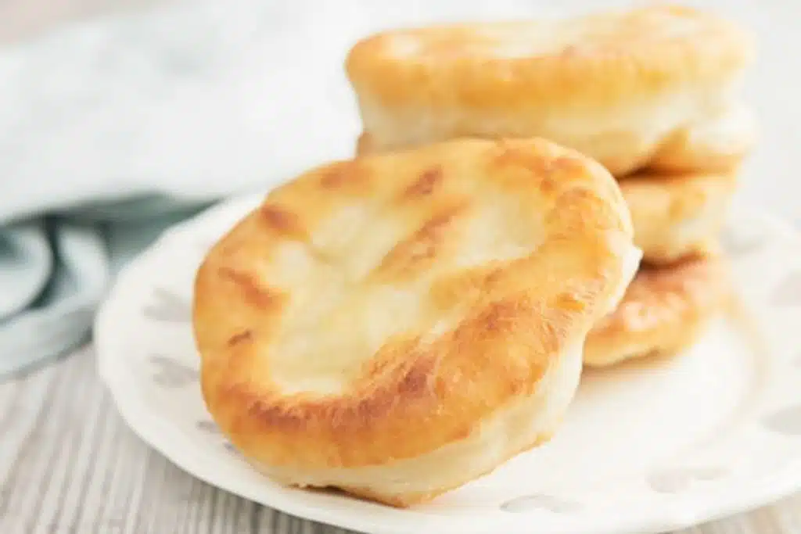

Bannock

Description
Bannock an unleavened bread, was originally brought to North America by Scottish explorers and traders. Indigenous peoples in particular Métis adopted bannock in their cuisine in the eighteenth and nineteenth centuries probably after their encounters with Scottish fur traders.
As a result, even today many Métis and aboriginal western Canadians often prepare this dish. In western Canada, bannock is much more associated with native and Métis culture than with its Scottish roots.
Traditionally it was made with barley or oats, fat or lard and water. Then sugar and milk even buttermilk were added.
Ingredients
- 2 cups all purpose flour (260 grams)
- 2 teaspoons baking powder
- ½ teaspoon salt
- 1 tablespoon olive oil or vegetable oil
- ¾ cup water (175 grams)
- vegetable oil for frying
Steps
- In a large bowl whisk together the flour, salt and baking powder.
- Then add the olive oil and whisk together with a fork, gradually add water and stir until the dough almost holds together. Move to a lightly floured flat surface and gently knead about 10 times just until the dough comes together (the dough will be sticky, do not overknead).
- Divide into 5 balls and flatten with the palm of your hand. Fry in hot oil (350F/175C)on medium heat (enough to cover the bottom of a medium frying pan), until golden brown on both sides (and cooked on the inside). Drain on a paper towel lined plate and eat warm or at room temperature. Enjoy!
Sources